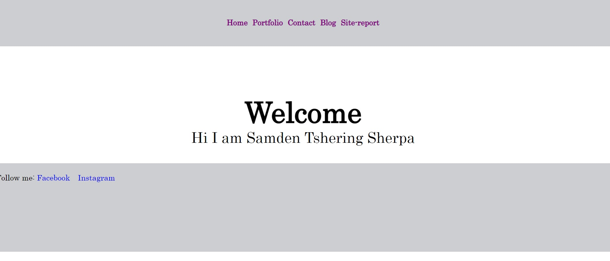
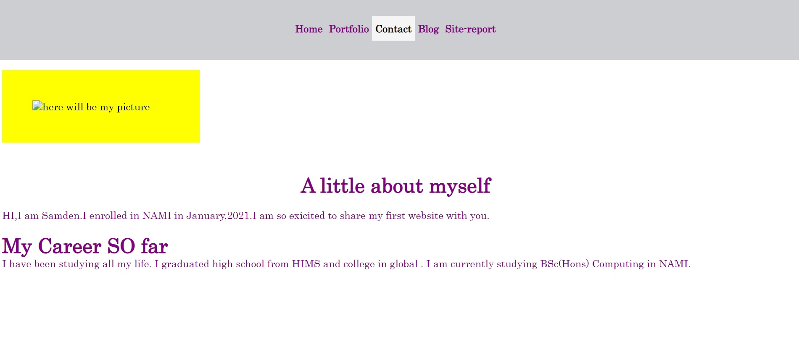
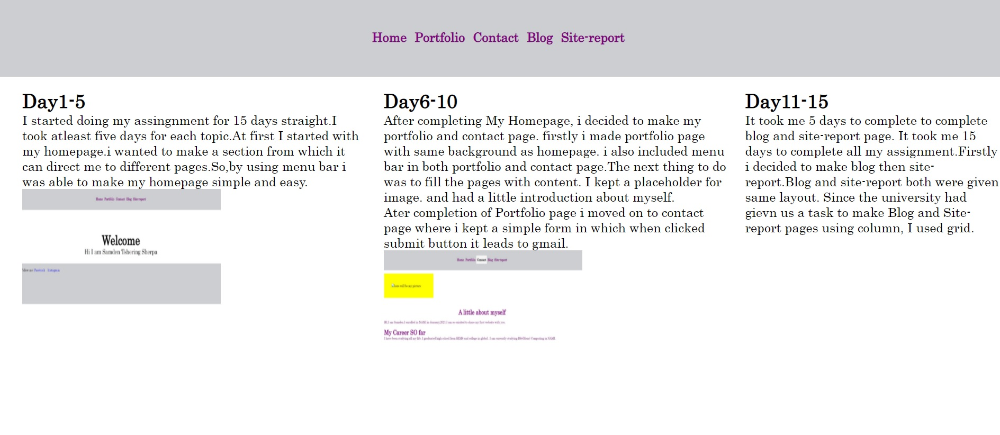

I started doing my assingnment for 15 days straight.I took atleast five days for each topic.At first I started with my homepage.i wanted to make a section from which it can direct me to different pages.So,by using menu bar i was able to make my homepage simple and easy. 
After completing My Homepage, i decided to make my portfolio and contact page. firstly i made portfolio page with same background as homepage. i also included menu bar in both portfolio and contact page.The next thing to do was to fill the pages with content. I kept a placeholder for image. and had a little introduction about myself.
Ater completion of Portfolio page i moved on to contact page where i kept a simple form in which when clicked submit button it leads to gmail. 
It took me 5 days to complete to complete blog and site-report page. It took me 15 days to complete all my assignment.Firstly i decided to make blog then site-report.Blog and site-report both were given same layout. Since the university had gievn us a task to make Blog and Site-report pages using column, I used grid.